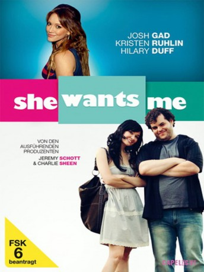
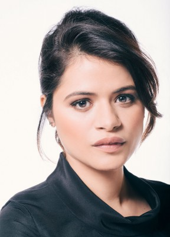

#9204 She Wants Me
 
 IMDB-Wertung: 5.8 / 10
IMDB-Wertung: 5.8 / 10  Metascore: 0
Metascore: 0 
Sam Baum ist ein neurotischer Drehbuchautor und Regisseur sowie ein liebenswerter und schrulliger New Yorker, der mittlerweile mit seiner attraktiven Freundin Sammy in Los Angeles lebt. Sam weiß, wie glücklich er sich schätzen darf, eine so hübsche Freundin zu haben, da er zuvor wenig Erfolg bei Frauen hatte. Und immerhin war Sammy zuvor mit einem sportlichen und erfolgreichen Harvard-Absolventen verheiratet, mit dem sie noch eine freundschaftliche Beziehung pflegt. Da sie ihr Dasein als erfolglose Schauspielerin fristet, bietet ihr der aufstrebende Filmemacher die Hauptrolle in seinem neuen Film an, um ihre Karriere in Schwung zu bringen. Als jedoch die momentan heißeste und meist gefragteste Schauspielerin Interesse an der Rolle zeigt, muss Sam die richtige Entscheidung treffen - Liebe oder Karriere?
Jahr: 2012
Dauer: 86 Minuten
FSK: 12
Land: USA Studio: GoDigitalTonspuren: DTS - ,
Untertitel: Deutsch,
Auflösung: 1080p (1920x1080) Größe: 5775 MB
Genre: Komödie
Regisseur: Rob Margolies
Drehbuch: Rob Margolies
Soundtrack: Matthew Puckett
Darsteller:
 Aaron Yoo als Max
Aaron Yoo als Max Alex Solowitz als Drew
Alex Solowitz als Drew- Brennan Murray als Cashier
- Brian Kubach als Joe Stunner
- Brit Morgan als Carly
 Charlie Sheen als Charlie Sheen
Charlie Sheen als Charlie Sheen Curt Lowens als Grandpa Arnie
Curt Lowens als Grandpa Arnie Debra Jo Rupp als Ruth Baum
Debra Jo Rupp als Ruth Baum- Delfina Alden als Natasha
- Elizabeth Brissenden als Max's Squeeze
 Ellen Albertini Dow als Grandma Elma
Ellen Albertini Dow als Grandma Elma- Hilary Duff als Kim Powers
- Ida Darvish als Helen
- Janna VanHeertum als Bar Wench
- Jillian Barberie als Barbara Bernhardt
 Joel Michaely als Lloyd
Joel Michaely als Lloyd Johnny Messner als John McCartney
Johnny Messner als John McCartney Josh Gad als Sam Baum
Josh Gad als Sam Baum- Joshua LeBar als Richard
- Kristen Ruhlin als Sammy Kingston
- Louise Linton als Jessica
-  Melonie Diaz als Gwen
- Michael Leone als Noah
- Sean Ross als Box Office Manager
- Shannon Theule als Nate
- Teddy Lane Jr. als Tyson
 Wayne Knight als Walter Baum
Wayne Knight als Walter Baum- Daniel Nguyen als Surprise Party Guest
- Tyler Barnes als Best Friend
- Michael Beardsley als Nerdy Man
- Marisa Baram als Sam's Ex #2
- Jeremiah Gallagher als L.A. Pedestrian
- Ruben Navarro als Cloaked Killer
- Chelsea Bellas als Night Club Goer
- Jessica Bishop als LA Pedestrian
- Heather Callahan-Stevens als Mara
- Bruce Wayne Eckelman als John's Dad
- Jayne Entwistle als Excited Kim Powers Fan
- Lindsay May Heathcote als Tori
- James Howarth als Mathew
- Rachel Johanson als NY Pedestrian
- Heidi Kerring als Kim's Friend #2
- Ciara McAvoy als Party Goer
- Jim Medcraft als Night Club Goer
- Mandi Mellen als Sam's Ex #7
- Allyson Morgan als NY Pedestrian
- Cat Navarro Lee als Sam's Ex #9
- Devi Ohira als Sam's Ex #10
- Ryan Gregory Phillips als Surprise Party Friend
- Megan Lee Pyle als Night Club Goer
Datei: X:\2012(N-Z)\She Wants Me (2012, FSK12, 1920x1080).mkv seit 19.07.2018
Festplatte: HD 2012(N-Z)-2013(A-H)
 Es gibt insgesamt 138 Filme in der Gruppe '2012(N-Z)'
Es gibt insgesamt 138 Filme in der Gruppe '2012(N-Z)'